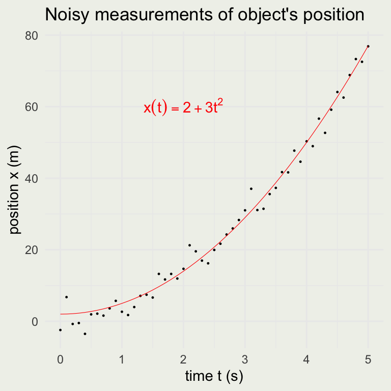
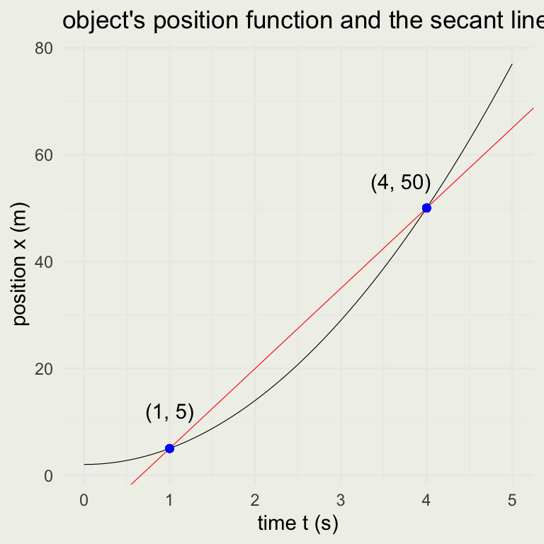

SMaC: Statistics, Math, and Computing
Applied Statistics for Social Science Research
Session 2 Outline
Linear, exponential, and logarithmic functions
Limits
Definition of the derivative
Rules of differentiation
The chain rule and product rules

Limits
The idea of the limit is to evaluate what the function approaches as we increase or decrease the inputs.

This demo shows what happens to the secant line as it approaches the tangent.
Example: Motion in a Straight Line
Suppose you have an experiment where you can measure the position of an object moving in a straight line every \(1/10\) of a second for 5 seconds. When you look at the graph of time versus position, it looks like this:

You guess that the function is quadratic in \(t\). If \(x\) is measured in meters, and \(t\) is in seconds, then \(a\) must have units of \(m\) and \(b\) must have units \(m/s^2\).
\[ x(t) = a + bt^2 \]
The statistical inference problem is to find plausible values of \(a\) and \(b\), given our noisy measurements and the assumption that the position function is quadratic. We will come back to how to do it later, but for now, assume that the most likely values were found to be \(a = 2\) and \(b = 3\).

We can now ask, what was the average velocity between \(1\) and \(4\) seconds? This is the same as the slope of the secant line:
\[ \bar{v} = \frac{\text{displacment} (m)}{\text{elapsed time} (s)} = \frac{\Delta x}{\Delta t} = \frac{x(4) - x(1)}{4-1} = \frac{50-5}{3} = 15 \text{ m/s} = 54 \text{ km/h} \]
Since we know that this is a line of the form \(x(t) = a + 15t\), that goes through the point \((t_1, x_1) = (1, 5)\), \(5 = a + 15\cdot1\) or \(a = -10\). The equation of the secant line is, therefore:
\[ x(t) = -10 + 15t \]
p <- ggplot(data.frame(t, x), aes(t, x))
p + geom_line(size = 0.2) +
geom_abline(slope = 15, intercept = -10, size = 0.2, color = 'red') +
geom_point(x = 1, y = 5, color = 'blue') +
geom_point(x = 4, y = 50, color = 'blue') +
xlab("time t (s)") + ylab("position x (m)") +
annotate("text", 3.7, 55, label = "(4, 50)") +
annotate("text", 1, 12, label = "(1, 5)") +
ggtitle("object's position function and the secant line")
What if we wanted to know the speedometer reading at \(4\) seconds? In other words, we want to know the speed at that instant. This is where the limit comes in.
\[ v = \lim_{\Delta t \to 0} \frac{\Delta x}{\Delta t} = \frac{dx}{dt} \]